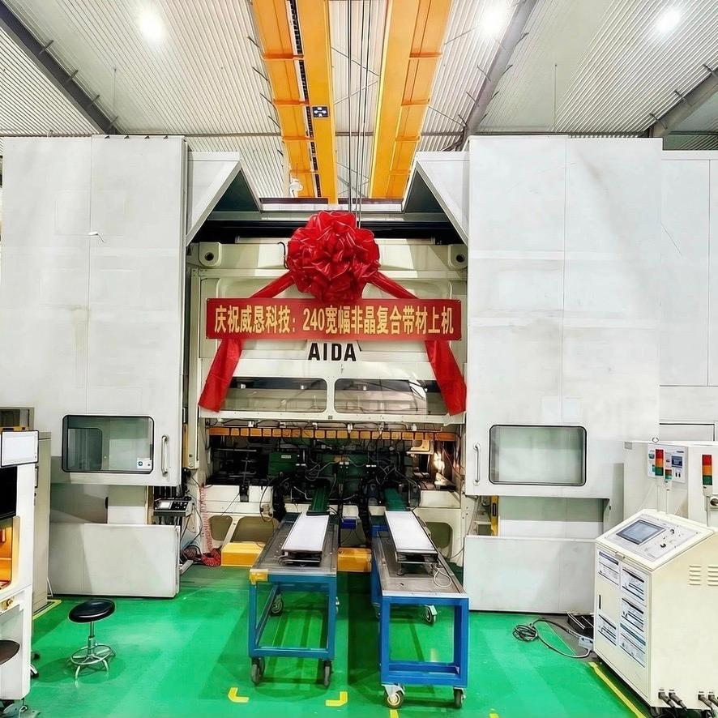

Enterprise Spirit
SPIRIT
Guided by the overall spirit of WCAN Group, WCAN Amorphous has always embraced reverence for time, vigilance toward the market, and dedication to innovation. We deeply understand that in the cutting-edge field of amorphous materials, standing still means falling behind. Only through continuous evolution can we remain at the forefront of the industry.
From optimizing amorphous ribbon material formulations, to refining core manufacturing processes, to expanding the boundaries of motor applications — every step embodies the WCAN pursuit of "better."
PHILOSOPHY
WCAN Group adheres to the business philosophy of "Integrity, Mutual Benefit, Win-Win Cooperation," continuously increasing investment in technological R&D and enterprise management. We believe that the essence of business is not a zero-sum game, but value co-creation.
The company actively seizes the commercialization opportunities of amorphous motors, engages in joint R&D with well-known domestic automotive and home appliance enterprises, takes the lead in building full supply chain capabilities for amorphous motors, and shares technological dividends with partners.
Green Commitment
The production process of amorphous alloys eliminates the high-temperature annealing step required by traditional silicon steel, significantly reducing manufacturing energy consumption. Using a single-step planar flow casting process, the entire production line is only about 20 meters long, compared to over 1,000 meters for traditional silicon steel lines, reducing production energy consumption by approximately 70%, with 100% waste recycling and re-melting.
In application, the ultra-low loss characteristics of amorphous materials can reduce no-load losses in transformers and motors by 60%~80%. It is a core technology listed in the National Key Energy-Saving and Low-Carbon Technology Promotion Catalog and a critical pillar for achieving the "dual carbon" goals.

* The above data is based on estimation models assuming all 30,000 tons of annual amorphous ribbon production replaces silicon steel in high-efficiency distribution transformers.
Quality & Safety
Quality Management System
Environmental Management System
Occupational Health & Safety
We strictly follow the ISO 14001 Environmental Management System, establishing closed-loop cooling water circulation and exhaust gas treatment systems to minimize the environmental impact of production.
At the same time, with the ISO 45001 Occupational Health and Safety Management System as a safeguard, we provide employees with a safe and healthy working environment, continuously upholding our zero-accident operation commitment.
WCAN Amorphous enhances energy efficiency through technological innovation, contributing to global sustainable development.
Industry Contribution
Deeply involved in the development of national standards including Technical Requirements and Test Methods for Amorphous Drive Motors for Electric Vehicles, Technical Specifications for Fe-based Amorphous Alloy Strips for Electric Vehicles, and Technical Requirements and Test Methods for Self-bonding Cores for Electric Vehicles.
A member of the China Electric Vehicle Industry Technology Innovation Strategic Alliance, collaborating with multiple universities, research institutions, and vehicle manufacturers within the alliance to explore application pathways for amorphous motors in next-generation electric drive systems.
Co-authored the New Energy Vehicle Amorphous Motor Industry Technology Development Report, transforming the company's technological expertise into shared industry standards and advancing technology toward industrialization.
Amorphous materials are listed in the National Key Energy-Saving and Low-Carbon Technology Promotion Catalog, serving as a key supporting technology for achieving the dual carbon goals. We drive the global carbon neutrality cause through technological innovation.
Established close partnerships with the Ningbo Institute of Materials Technology and Engineering (Chinese Academy of Sciences), Zhejiang University, and other institutions, forming an "industry-academia-research-application" collaborative innovation mechanism.
Taking the lead in building full supply chain capabilities for amorphous motors, steadily becoming a core leading enterprise in the industrialization of amorphous motors.